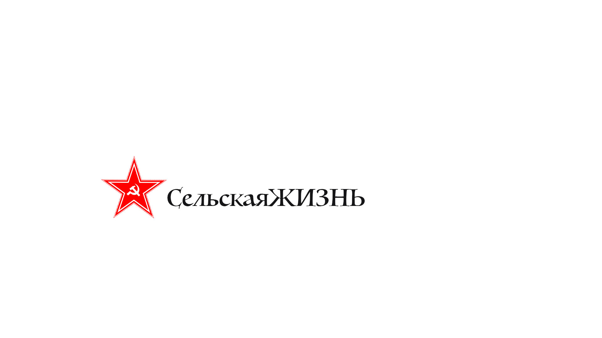

Вектор – на развитие
В ходе визита Владимира Путина в Пекин Россия и Китай подписали ряд
соглашений о сотрудничестве в области сельского хозяйств

В ходе визита Владимира Путина в Пекин Россия и Китай подписали ряд
соглашений о сотрудничестве в области сельского хозяйств
Россия и КНР запустят крупное сельхозпредприятие
в Красноярском крае
Российский фонд прямых инвестиций (РФПИ) совместно с одним из крупнейших холдингов Китая в сфере сельского хозяйства инвестирует более 6 млрд рублей в строительство предприятия по переработке сельскохозяйственных культур в Красноярском крае. Об этом 16 октября сообщил фонд в своем релизе.
“Совместные инвестиции будут направлены на строительство предприятия, которое станет первым маслоэкстракционным заводом в Восточной Сибири, оснащенным с применением передовых технологий и оборудования, что позволит значимо нарастить поставки сельскохозяйственной продукции на рынки Азии”, – рассказал генеральный директор фонда Кирилл Дмитриев.
Завод с современным оборудованием и проектной мощностью более 330 тыс. т продукции в год будет построен и запущен в 2025–2026 годах в красноярском городе Назарово, указывается в сообщении РФПИ. На предприятии планируется ежегодно производить 140 тыс. т гидратированного рапсового масла, более 180 тыс. т рапсового шрота и 2 тыс. т рапсового лецитина.
Запуск предприятия позволит развивать смежные сферы и заложит основу для дальнейших совместных инвестиций по другим проектам, а производимая им продукция будет обладать высоким экспортным потенциалом, отметил Дмитриев.
Объявление о создании нового российского-китайского предприятия состоялось в преддверии визита президента России Владимира Путина в Пекин на третий международный форум “Один пояс – один путь”.